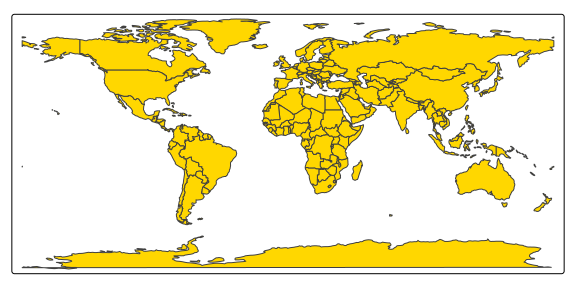
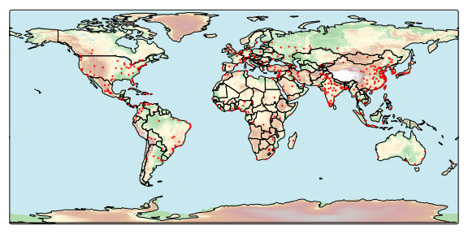
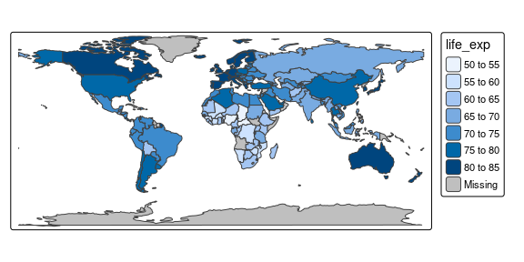
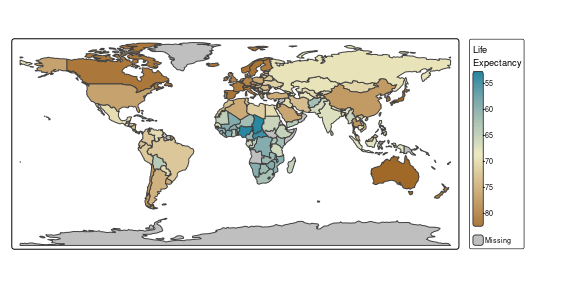
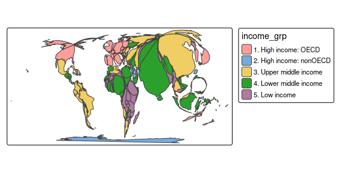

A visual variable describes a certain visual property of a drawn object, such as color, size, shape, line width, line stroke, transparency, fill pattern (in ggplot2 these are called aesthetics).
A visual variable can be specified using a constant value (e.g. fill = "blue") or be data-driven (more on this later).
If it can only be specified with a constant value, it is called a visual constant.
The following table shows which visual variables are used in standard map layers.
| Map layer | Visual variables | Visual constant |
|---|---|---|
tm_basemap() |
none | alpha |
tm_polygons() |
fill (fill color), col (border color), lwd (border line width), lty (border line type), fill_alpha (fill transparency), col_alpha (border color transparency) |
linejoin (line join) and lineend (line end) |
tm_symbols() |
fill (fill color), col (border color), size, shape, lwd (border line width) lty (border line type), fill_alpha fill transparency, col_alpha border color transparency |
linejoin (line join) and lineend (line end) |
tm_lines() |
col (color), lwd (line width), lty (line type), alpha transparency |
linejoin (line join) and lineend (line end) |
tm_raster() |
col (color), alpha (transparency) |
|
tm_text() |
size, col
|
New in tmap 4.0 is that users can write their own custom map layer functions; more on this in another vignette. Important for now is that map layers and their visual variables can be extended if needed.
Constant visual values
The following code draws gold country polygons.
tm_shape(World) +
tm_polygons("gold")
All the visual variables mentioned in the previous table are used, but with constant values.
For instance, polygon borders are drawn with width lwd and colored with col.
Each of these visual variables has a default value, in case of the border width and color respectively 1 and "black".
The only visual variable for which we have specified a different value is fill, which we have set to "gold".
For those who are completely new to tmap: the function tm_shape() specifies the spatial data object, which can be any spatial data object from the packages sf, stars, terra, sp, and raster.
The subsequent map layer functions (stacked with the + operator) specify how this spatial data is visualized.
In the next example we have three layers: a basemap from OpenTopoMap, country polygon boundaries, and dots for metropolitan areas:
if (requireNamespace("maptiles")) {
tm_basemap(server = "OpenTopoMap", zoom = 2, alpha = 0.5) +
tm_shape(World, bbox = sf::st_bbox(c(xmin = -180, xmax = 180, ymin = -86, ymax = 86))) +
tm_polygons(fill = NA, col = "black") +
tm_shape(metro) +
tm_symbols(size = 0.1, col = "red") +
tm_layout(inner.margins = rep(0, 4))
}
#> Loading required namespace: maptiles
#> Warning: Current projection unknown. Long lat coordinates (wgs84) assumed.
Each visual variable argument can also be specified with a data variable (e.g., a column name). What happens in that case is that the values of data variable are mapped to values of the corresponding visual variable.
tm_shape(World) +
tm_polygons("life_exp")
In this example, life expectancy per country is shown, or to put it more precisely: the data variable life expectancy is mapped to the visual variable polygon fill.
To understand this data mapping, consider the following schematic dataset:
#> geom x1 vv1
#> 1 polygon1 72 blue6
#> 2 polygon2 58 blue3
#> 3 polygon3 52 blue2
#> 4 polygon4 73 blue7
#> 5 ... ... ...The first column contains spatial geometries (in this case polygons, but they can also be points, lines, and raster tiles). The second column is the data variable that we would like to show. T The third column contains the visual values, in this case, colors.
Important to note is that there are many ways to scale data values to visual values.
In this example, data values are put into 5-year intervals, and a sequential discrete blue scale is used to show these.
With the tm_scale_*() family of functions, users are free to create other scales.
tm_shape(World) +
tm_polygons("life_exp",
fill.scale = tm_scale_continuous(values = "-carto.earth"),
fill.legend = tm_legend("Life\nExpectancy"))
#> [plot mode] fit legend/component: Some legend items or map compoments do not
#> fit well, and are therefore rescaled.
#> ℹ Set the tmap option `component.autoscale = FALSE` to disable rescaling.
This map uses a continuous color scale with colors from CARTO. More on scales later.
Transformation variables
Besides visual variables, map layer may use spatial transformation variables.
if (requireNamespace("cartogram")) {
tm_shape(World, crs = 8857) +
tm_cartogram(size = "pop_est", fill = "income_grp")
}
#> Loading required namespace: cartogram
#> Cartogram in progress...
We used two variables: size to deform the polygons using a continuous cartogram and fill to color the polygons.
The former is an example of a transformation variable.
In our example dataset:
#> geom x1 x_scaled geom_transformed
#> 1 polygon1 491,775 0.0007 polygon1'
#> 2 polygon2 2,231,503 0.0033 polygon2'
#> 3 polygon3 34,859,364 0.0554 polygon3'
#> 4 polygon4 4,320,748 0.0067 polygon4'
#> 5 ... ... ... ...The data variable x1, in the example pop_est (population estimation), is scaled to x1_scaled which is, in this case, a normalization using a continuous scale.
Next, the geometries are distorted such that the areas are proportional to x1_scaled (as much as the cartogram algorithm is able to achieve).